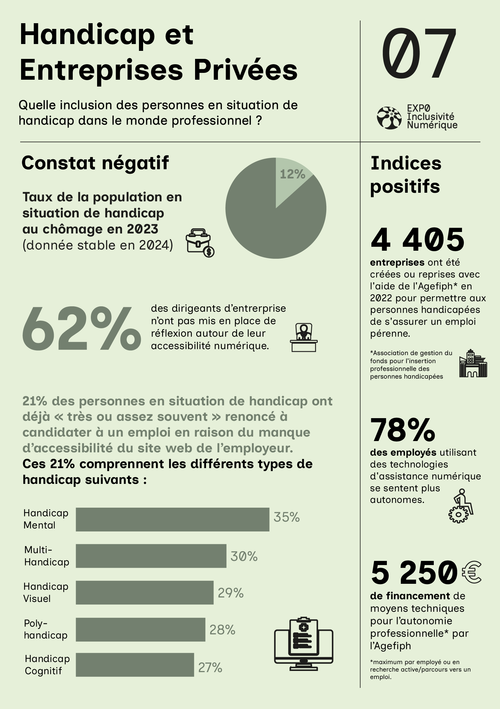

“Data Visualisation and Digital Inclusivity” Exhibition
The most significant project of the BUT Information and Digital Content Management program. During the creation of ExpoData 2025 (its name), we worked on a large-scale topic: designing a data visualisation exhibition. This event brought together all the skills acquired over these three years, combining strategic, creative, and organisational competencies. For my part, I worked on the topic “Disability and Organisations”, creating a data visualisation correlating the representation of people with disabilities in public and private institutions. I was also part of the “Partnerships and Treasury” team and succeeded in bringing in major partners, such as Emmaüs Connect. Alongside Louise Munier, I also managed the project and its budget.
Skills developed :
- Data visualisation design: Research and selection of relevant open data. Development of a clear research question and creation of a poster on the theme “Disability and Organisations”, correlating the presence of people with disabilities in public and private institutions.
- Production and implementation of the exhibition: Graphic and technical creation of the materials. Organisation of the opening event and contribution to setting up a permanent exhibition.
- Partnership development and budget management: Contact with key players in digital inclusivity (Bordeaux Metropole, Emmaüs Connect, the Gironde Department). Discussions with professionals and experts to enhance the relevance of the project.
- Optimising communication and visibility: Organisation of the opening event, which welcomed nearly a hundred visitors.
This project was a professionalising and unifying experience, allowing me to combine data analysis, visual design, and event organisation while developing a greater awareness of the issues surrounding digital inclusivity.
View or download the complete PDF by clicking on it.
